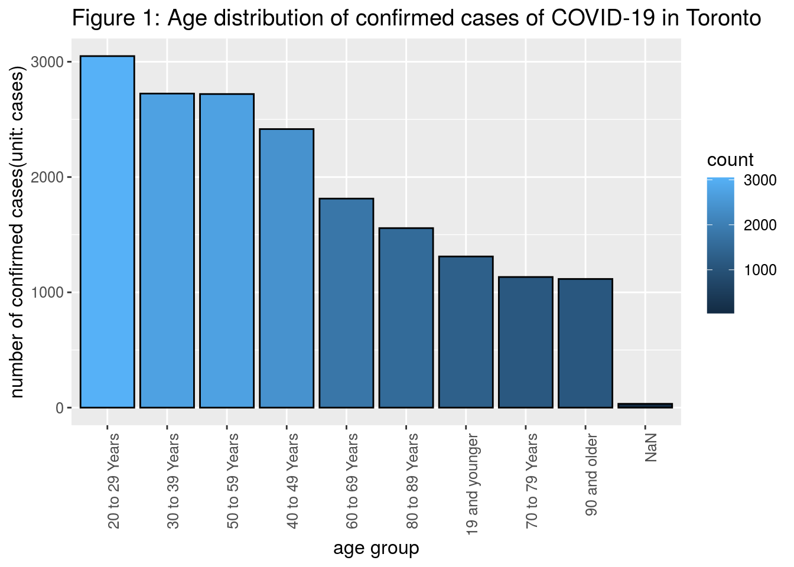

Abstract
COVID-19 has become a global health crisis, affecting 213 counties and more than 30 million people worldwide (Henrik Pettersson, Byron Manley and Sergio Hernandez, 2020). To further investigate how individuals from different age groups are affected by the coronavirus, we explored the data set of “COVID-19 Cases in Toronto” downloaded from the Toronto Open Data Portal. Surprisingly, we discovered that the age group of 20-29 year-olds, an age group that is generally considered to have the most robust immune system (Pagán, 2016), has the most confirmed cases of COVID-19. Such a finding may suggest that the healthcare regulatory agency may have to establish more countermeasures to slow down the spread of COVID-19 among young people.
Introduction
According to the most up-to-date data released by the Canadian healthcare authority, Ontario is a significantly impacted province with 46,484 confirmed cases of COVID-19, second only to Quebec, which has 67,080 confirmed cases (Government of Canada, 2020). Toronto, the economic center of Ontario, has 17,259 confirmed cases, more than one-third of the total number of cases confirmed provincially (City of Toronto, 2020). Therefore, this global pandemic has seriously affected Toronto in various aspects. Hoping to gain more insights into the current situation of COVID-19 in Toronto, we analyzed the data set “COVID-19 Cases in Toronto” from the Toronto Open Data Portal, especially the age distribution of confirmed cases. Namely, the variable of interest in our analysis is the age group of confirmed cases. We discovered that younger people had suffered the most from the COVID-19, while the age group of people between 70-79 years old has the lowest number of confirmed cases.
The data set of “COVID-19 Cases in Toronto” contains 16,942 observations, with each unit of observation indicating a specific case of COVID-19 in Toronto. Each observation is associated with 18 variables, including information of the confirmed case’s age group, source of infection, episode date, gender, whether he/she is currently hospitalized, etc. To better evaluate how individuals from different age groups are affected by the coronavirus, we counted the number of confirmed cases within each age group and sorted the result in descending order to create a bar chart to visualize the current situation. Notice that young and middle-aged people tend to suffer more from the COVID-19, as shown by Figure 1 below. Specifically, the age group of 20-29 year-olds has the largest number of confirmed cases of COVID-19, amounting to 2714. The other three age groups that have more than 2000 confirmed cases are all consisted of middle-aged:
• 2,616 cases for people who are 50-59 years old
• 2,519 cases for people who are 30-39 years old
• 2,325 cases for people who are 40-49 years old
Surprisingly, there are only 3,772 confirmed cases in the age group of more than 70 years old. After further calculations, we found that people aged 70 years and above only account for approximately 22% of the population of all 16,942 confirmed cases in Toronto. Such a finding is unexpected because older people tend to have a weak immune system, meaning that they should be more significantly affected by the coronavirus (Pagán, 2016).
The findings above suggest that young people, especially people between 20 to 29, are the primary sources of infections in Toronto. Therefore, the healthcare regulatory agency should allocate more resources and establish a more concrete countermeasure to prevent the spread of the COVID-19 among young people. However, the above suggestion has some potential weaknesses. First, the ideal target population - population intended to be investigated - in our analysis should be all cases of COVID-19 in Toronto. Unfortunately, it is possible that fewer older people chose to go to the hospital, making the confirmed cases of senior citizens smaller than what it should be. Second, many news articles indicate that young people, especially college students, still gather and party, ignoring current measures to slow down the coronavirus (Artuso, 2020). Therefore, our suggestion for the healthcare authority to put more restrictions on young people may be hard to carry out. Later in this paper, we will separate college students from the age group of 20-29 to investigate whether they account for a more significant portion of the corresponding age group, thus evaluating whether healthcare authorities should enforce stricter measures on college students.
A plot of age distribution of confirmed cases of COVID-19 in Toronto

References
Artuso, A. (2020, July 21). Young adults contracting COVID-19 at parties: Officials. Retrieved September 20, 2020, from https://torontosun.com/news/provincial/young-adults-getting-covid-19-at-parties-officials
Canada, P. (2020, September 13). Government of Canada. Retrieved September 20, 2020, from https://www.canada.ca/en/public-health/services/diseases/2019-novel-coronavirus-infection.html
City of Toronto. (2020, September 18). COVID-19: Status of Cases in Toronto. Retrieved September 20, 2020, from https://www.toronto.ca/home/covid-19/covid-19-latest-city-of-toronto-news/covid-19-status-of-cases-in-toronto/
Pagán, C. (2016, August 23). The Immunity Challenge: How aging affects your immune system. Retrieved September 20, 2020, from https://www.webmd.com/healthy-aging/guide/seniors-boost-immunity
Tracking coronavirus’ global spread. (n.d.). Retrieved September 20, 2020, from https://www.cnn.com/interactive/2020/health/coronavirus-maps-and-cases/
JJ Allaire and Yihui Xie and Jonathan McPherson and Javier Luraschi and Kevin Ushey and Aron Atkins and Hadley Wickham and Joe Cheng and Winston Chang and Richard Iannone (2020). rmarkdown: Dynamic Documents for R. R package version 2.3. URL https://rmarkdown.rstudio.com.
Yihui Xie and J.J. Allaire and Garrett Grolemund (2018). R Markdown: The Definitive Guide. Chapman and Hall/CRC. ISBN 9781138359338. URL https://bookdown.org/yihui/rmarkdown.
Yihui Xie (2020). blogdown: Create Blogs and Websites with R Markdown. R package version 0.20.
Yihui Xie, Alison Presmanes Hill, and Amber Thomas (2017). blogdown: Creating Websites with R Markdown. Chapman and Hall/CRC. ISBN 978-0815363729
R Core Team (2020). R: A language and environment for statistical computing. R Foundation for Statistical Computing, Vienna, Austria. URL https://www.R-project.org/.
Wickham et al., (2019). Welcome to the tidyverse. Journal of Open Source Software, 4(43), 1686, https://doi.org/10.21105/joss.01686